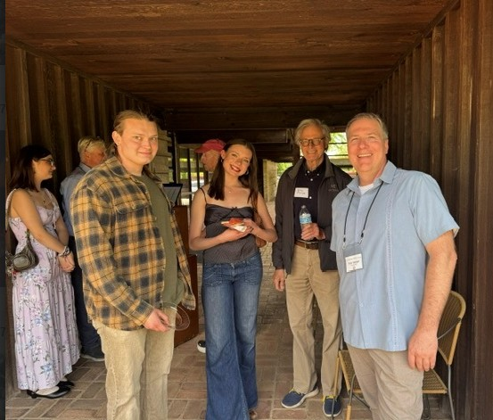
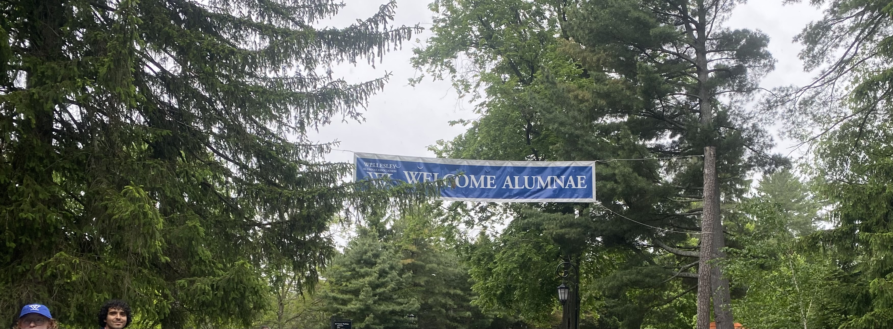
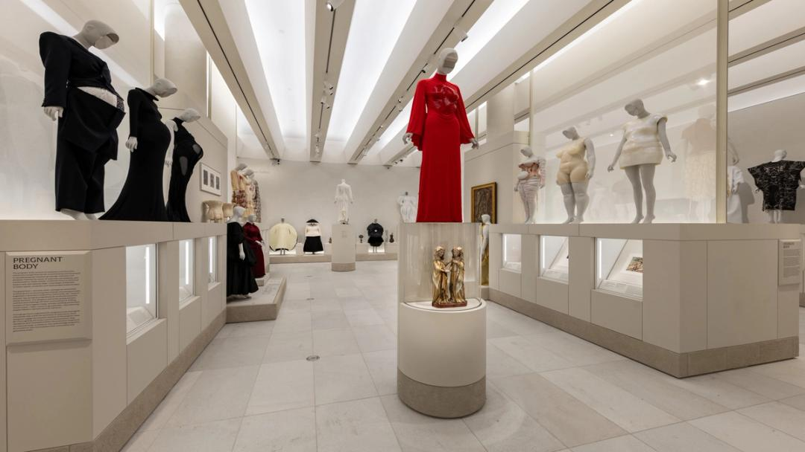

Abracadabra… and Then the Magic Happens
With Chicago poised to become the world’s most dazzling home for modern magic, it is appropriate to spotlight the impact of magic in some often under-served populations.

2026 Peony Party
Fans of Paul Schweikher's modernist home gathered in Schaumburg on May 30 at the house museum's 3rd annual Peony Party. A fundraiser to celebrate blooming of the peonies and…

The 60th Reunion Is Worth Celebrating!
One's 50th college reunion is a major milestone. Most of us who can, make it a point to go. But with that one behind us, the 60th is more likely to be skipped. At my alma mater,…

Do Division Street Fest 2026: Music, Food, and Perfect Weather to Kick Off Festival Season
This year’s Do Division Street Fest featured over 65 vendors and 40,000 people attended throughout the entirety of the weekend. The three day music festival in the heart of…

An Alternate Take on Ferris Bueller’s Day Off
After Jackson LeJeune’s thoughtful review of Ferris Bueller’s Day Off ran in our pages, a reader wrote in with a response we could not set aside. We don’t…

Americana at Auction: Telling the Liberty Story
Like an 18th century quilting bee, Chicago museums, universities, libraries and even the Botanic Garden are ready for July 4th. Their diverse imaginations are magically coming…

Music Institute of Chicago: Exceeding Your Goals at 95
The Music Institute of Chicago welcomed more than 250 guests to its 95th Anniversary Gala at The Four Seasons Hotel Chicago recently. The event raised more than $1 million,…

Connective Threads
In 1937 New York’s performing arts producer and philanthropist Irene Lewisohn (1886–1944) founded the “Museum of Costume Art,” at Rockefeller Center on…

Look Who Pitched George Washington’s Tent
“It was the people, not just a privileged few, who transformed grievances into a real revolution. This is at the heart of our robust origin story, important not only for us…